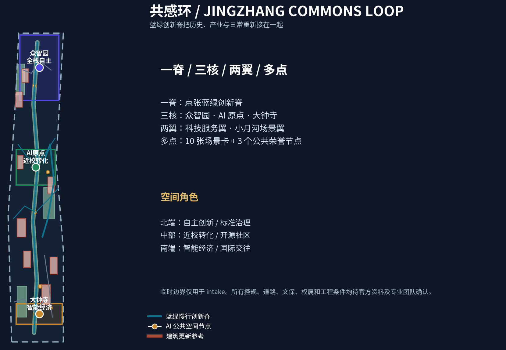
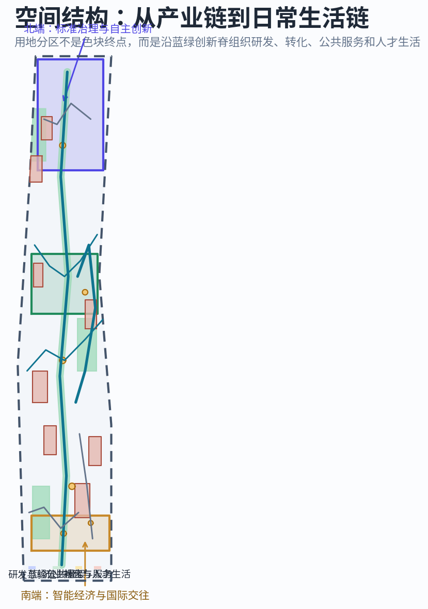
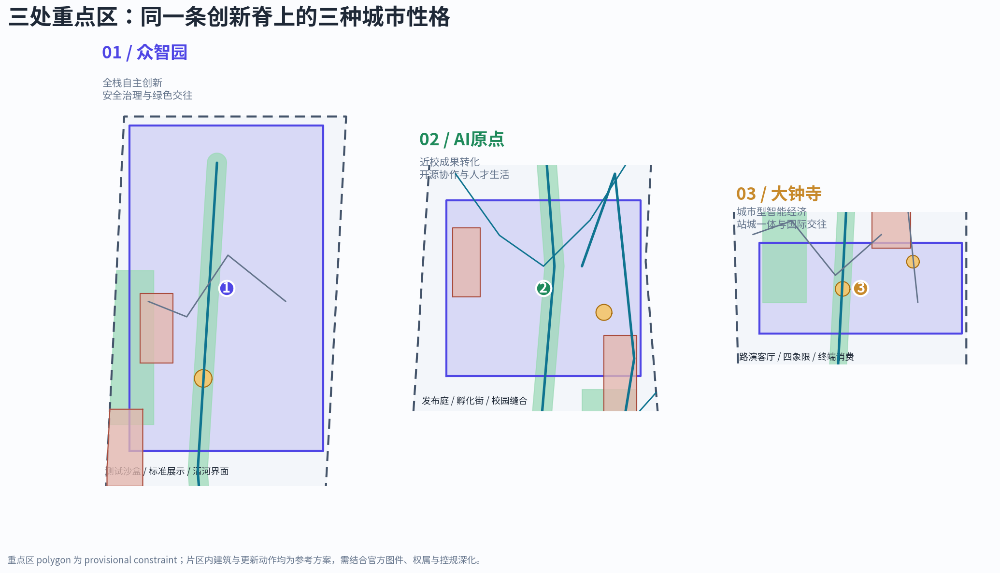
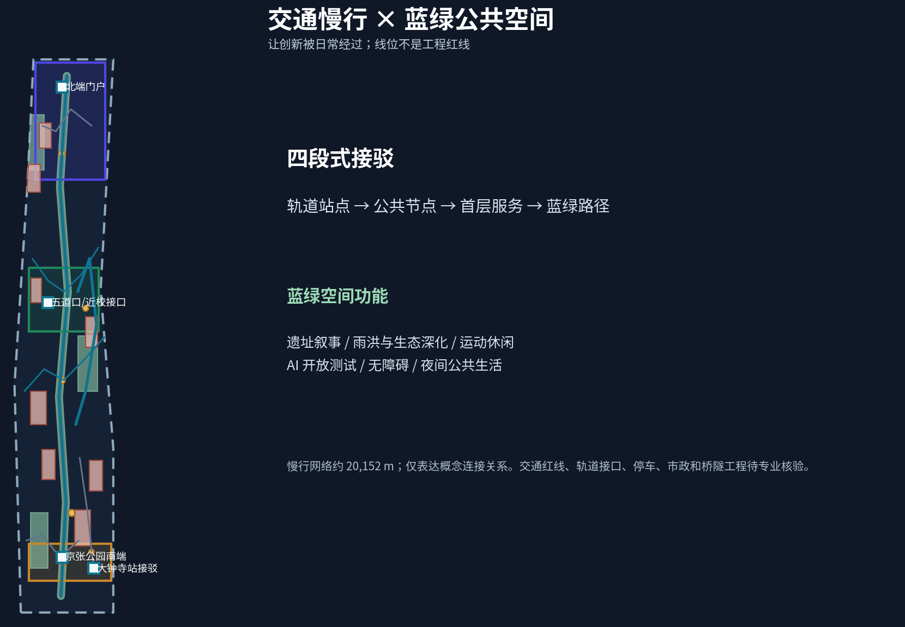
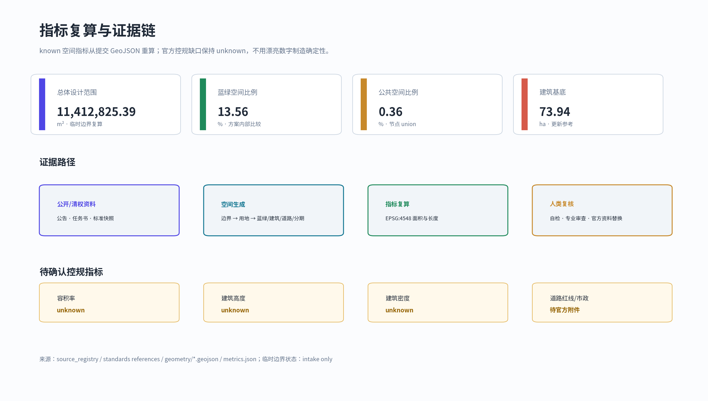

统筹研究范围
约 43.6 km²：三区两翼、AI 产业链、人才链和全球协同。
一条蓝绿创新脊，连接百年京张记忆、近校成果转化、全栈自主创新和城市型智能经济。AI 场景以公共利益、公开/授权数据、可解释和人工复核为前提。
共感环总结构：临时边界用虚线，设计重点落在蓝绿创新脊、公共节点和创新回路。

统筹研究范围 → 总体设计范围 → 重点区域范围，分别回答产业生态、城市更新和片区空间。

约 43.6 km²：三区两翼、AI 产业链、人才链和全球协同。
约 11.4 km²：蓝绿创新脊、更新项目和交通市政参考。
368.4 ha：众智园、AI 原点社区、大钟寺三个详细设计锚点。
三个片区是测试、转化、消费/交往的连续角色。

全栈自主、标准治理、清河绿客厅、安全剧场。
近校转化、开源协作、成果发布、人才日常。
智能终端、城市消费、路演客厅、四象限慢行前场。
用地使用可校验分类；建筑属性表达更新逻辑，不表达地块级审批或拆改结论。项目分期是概念推进路径。
研发与验证、蓝绿公共骨架、产业转化与服务、社区与人才生活四类空间角色共同构成 partition。
八个建筑基底参考对象以保留/改造优先、低扰动更新、功能复合或新建参考标注。
八个项目从公共空间、重点片区、科技服务翼和活动运营逐期推进，依赖官方控规、权属、交通和市政确认。
慢行/接驳中心线只表达关系，不是道路红线或工程线位；蓝绿空间承载历史叙事、日常生活和可撤回 AI 测试。

10 张场景卡，含 4 个产业测试/验证场景；每张卡都需要数据授权、人工复核、公众解释和运营反馈。
结构化数据是权威层；图、HTML 和 PDF 是阅读层。公告 1.3/1.4/1.5 与 agent.1–agent.6 由 compliance_matrix.json 覆盖。

总体概念、生态案例、场景卡、公共空间/朝圣地标、文化叙事、长期运营均在 proposal.md 展开。
官方公告、清权任务书、标准本地快照、source registry、临时 geometry 与背景案例记录均可回溯。
官方边界、控规、权属、道路红线、市政、文保和工程条件均保持待确认。